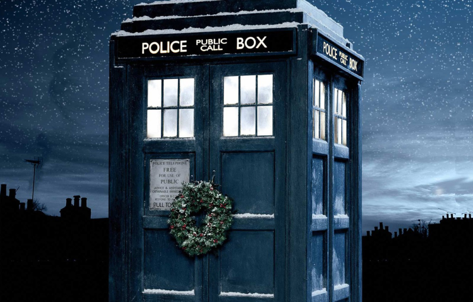
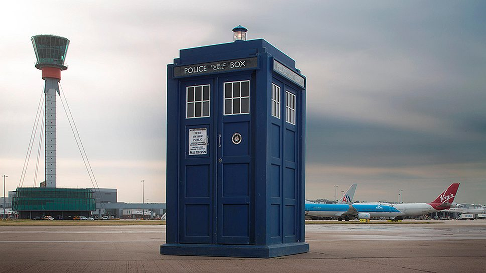

Инопланетянин-гуманоид, называющий себя Доктором, путешествует через время и пространство в космическом корабле, который снаружи выглядит как полицейская будка 50-х годов. Доктор чрезвычайно эксцентричен и имеет невероятные знания в областях технологии, истории и науки. Он путешествует вместе со своими компаньонами, попутно борясь против космических злодеев и спасая Землю от бесчисленных врагов.
 Плачущие ангелы — чрезвычайно мощная гуманоидная раса, тела представителей которой при воздействии квантового замка могут обращаться в камень и переставать двигаться (достаточно посмотреть на них, и квантовый замок сработает). Они закрывают свои лица руками, чтобы случайно не взглянуть на другого представителя своей расы, что и дало им такое название за сходство внешнего вида с плачущим гуманоидом, спрятавшим лицо в ладони.
Dont even blink.
Далеки — мутировавшие потомки каледов с планеты Скаро, заключённые в броню из поликарбида (ТВ: Воспоминания далеков, Судный день) и далеканиума (ТВ: Эволюция далеков, Внутрь далека, Вторжение далеков на Землю). Главным врагом своей расы они считали Повелителя Времени Доктора, который множество раз останавливал их планы по уничтожению всех, кроме себе подобных.
Исповедники (или Конфессиальные священники) - искусственно созданная раса священников, которая являлась частью Папского Мейнфрейма. Они были созданы для того, чтобы дать людям возможность исповедаться в своих грехах и потом забыть о этом разговоре. Некоторые из Исповедников примкнули к отколовшемуся от Церкви ордену Тишины, который хотел кардинальными мерами победить в осаде Трензалора